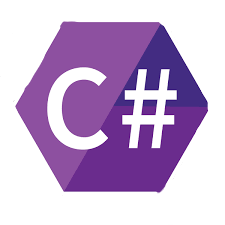
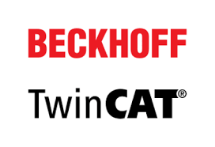

Projects Page

C#
Please see my Github repository for this project in C#. If you would like to contribute time or talents, connect with me through any of the means on my Contact page.
Web Design
This entire site is an example of what I am learning in my web design 1 course. If you would like to contribute time or talents, connect with me through any of the means on my Contact page.
Node-Red
Please see my Github repository for this project in Node-Red. It actually brings together the other three projects into a Flow based Visualization of Data from an industrial controller. If you would like to contribute time or talents, connect with me through any of the means on my Contact page.
Machinery Control Code
Please see my Github repository for this project in TwinCAT Machinery Control Programming. TwinCAT can be downloaded from https://beckhoff.com/ If you would like to contribute time or talents, connect with me through any of the means on my Contact page.